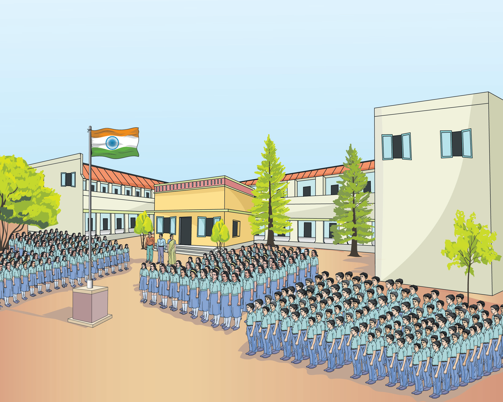
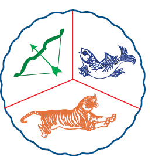

கல்வி, அறிவுத் தேடலுக்கான பயணம் மட்டுமல்ல, எதிர்கால வாழ்விற்கு அடித்தளம் அமைத்திடும் கனவின் தொடக்கமும்கூட. அதே போன்று, பாடநூல் என்பது மாணவர்களின் கைகளில் தவழும் ஒரு வழிகாட்டி மட்டுமல்ல, அடுத்த தலைமுறை மாணவர்களின் சிந்தனைப் போக்கை வடிவமைத்திடும் வல்லமை கொண்டது என்பதையும் உணர்ந்துள்ளோம். பெற்றோர், ஆசிரியர் மற்றும் மாணவரின் வண்ணக் கனவுகளைக் குழைத்து ஓர் ஓவியம் தீட்டியிருக்கிறோம். அதனூடே கீழ்க்கண்ட நோக்கங்களையும் அடைந்திடப் பெருமுயற்சி செய்துள்ளோம்.
கற்றலை மனனத்தின் திசையில் இருந்து மாற்றிப் படைப்பின்
பாதையில் பயணிக்க வைத்தல்.
தமிழர்தம் தொன்மை, வரலாறு, பண்பாடு மற்றும் கலை, இலக்கியம் குறித்த பெருமித உணர்வை மாணவர்கள் பெறுதல்.
தன்னம்பிக்கையுடன் அறிவியல் தொழில்நுட்பம் கைக்கொண்டு மாணவர்கள் நவீன உலகில் வெற்றிநடை பயில்வதை உறுதிசெய்தல்.
அறிவுத்தேடலை வெறும் ஏட்டறிவாய்க் குறைத்து மதிப்பிடாமல் அறிவுச் சாளரமாய்ப் புத்தகங்கள் விரிந்து பரவி வழிகாட்டுதல்.
தோல்விபயம் மற்றும் மன அழுத்தத்தை உற்பத்தி செய்யும் தேர்வுகளை உருமாற்றி, கற்றலின் இனிமையை உறுதிசெய்யும் தருணமாய் அமைத்தல்.
புதுமையான வடிவமைப்பு, ஆழமான பொருள் மற்றும் குழந்தைகளின் உளவியல் சார்ந்த அணுகுமுறை எனப் புதுமைகள் பல தாங்கி உங்களுடைய கரங்களில் இப்புதிய பாடநூல் தவழும் பொழுது, பெருமிதம் ததும்ப ஒரு புதிய உலகத்துக்குள் நீங்கள் நுழைவீர்கள் என்று உறுதியாக நம்புகிறோம்.
நாட்டுப்பண்
ஜன கண மன அதிநாயக ஜய ஹே
பாரத பாக்ய விதாதா
பஞ்சாப ஸிந்து குஜராத மராட்டா
திராவிட உத்கல பங்கா
விந்திய ஹிமாசல யமுனா கங்கா
உச்சல ஜலதி தரங்கா.
தவ சுப நாமே ஜாகே
தவ சுப ஆசிஸ மாகே
காஹே தவ ஜய காதா
ஜன கண மங்கள தாயக ஜய ஹே
பாரத பாக்ய விதாதா
ஜய ஹே ஜய ஹே ஜய ஹே
ஜய ஜய ஜய ஜய ஹே
மகாகவி இரவீந்திரநாத் தாகூர்
நாட்டுப்பண் பொருள்
இந்தியத் தாயே, மக்களின் இன்பதுன்பங்களைக் கணிக்கின்ற நீயே எல்லாருடைய மனத்திலும் ஆட்சி செய்கிறாய். நின் திருப்பெயர் பஞ்சாபையும், சிந்துவையும், கூர்ச்சரத்தையும், மராட்டியத்தையும், திராவிடத்தையும், ஒடிசாவையும், வங்காளத்தையும் உள்ளக்கிளர்ச்சி அடையச் செய்கிறது. நின் திருப்பெயர் விந்திய, இமயமலைத் தொடர்களில் எதிரொலிக்கிறது. யமுனை, கங்கை ஆறுகளின் இன்னொலியில் ஒன்றுகிறது. இந்தியக் கடல் அலைகளால் வணங்கப்படுகிறது. அவை நின்னருளை வேண்டுகின்றன. நின் புகழைப் பரவுகின்றன. இந்தியாவின் இன்ப, துன்பங்களைக் கணிக்கின்ற தாயே உனக்கு வெற்றி, வெற்றி, வெற்றி.

தமிழ்த்தாய் வாழ்த்து
நீராருங் கடலுடுத்த நிலமடந்தைக் கெழிலொழுகும்
சீராரும் வதனமெனத் திகழ்பரதக் கண்டமிதில்
தெக்கணமும் அதிற்சிறந்த திராவிடநல் திருநாடும்
தக்கசிறு பிறைநுதலும் தரித்தநறுந் திலகமுமே
அத்திலக வாசனைபோல் அனைத்துலகும் இன்பமுற
எத்திசையும் புகழ்மணக்க இருந்தபெருந் தமிழணங்கே
தமிழணங்கே
உன் சீரிளமைத் திறம்வியந்து செயல்மறந்து வாழ்த்துதுமே, வாழ்த்துதுமே, வாழ்த்துதுமே. மனோன்மணீயம் பெ. சுந்தரனார்.

தமிழ்த்தாய் வாழ்த்து பொருள்
ஒலி எழுப்பும் நீர் நிறைந்த கடலெனும் ஆடையுடுத்திய நிலமெனும் பெண்ணுக்கு,
அழகுமிளிரும் சிறப்புநிறைந்த முகமாகத் திகழ்கிறது பரதக்கண்டம். அக்கண்டத்தில், தென்னாடும் அதில் சிறந்த திராவிடர்களின் நல்ல திருநாடும், பொருத்தமான பிறை போன்ற நெற்றியாகவும், அதிலிட்ட மணம் வீசும் திலகமாகவும் இருக்கின்றன.
அந்தத் திலகத்தில் இருந்து வரும் வாசனைபோல, அனைத்துலகமும் இன்பம் பெறும் வகையில் எல்லாத் திசையிலும் புகழ் மணக்கும்படி (புகழ் பெற்று) இருக்கின்ற பெருமைமிக்க தமிழ்ப் பெண்ணே, தமிழ்ப் பெண்ணே என்றும் இளமையாக இருக்கின்ற உன் சிறப்பான திறமையை வியந்து உன் வயப்பட்டு எங்கள் செயல்களை மறந்து உன்னை வாழ்த்துவோமே, வாழ்த்துவோமே, வாழ்த்துவோமே.
தேசிய ஒருமைப்பாட்டு உறுதிமொழி
நாட்டின் உரிமை வாழ்வையும் ஒருமைப்பாட்டையும் பேணிக்காத்து வலுப்படுத்தச் செயற்படுவேன் என்று உளமார நான் உறுதி கூறுகிறேன். ஒருபோதும் வன்முறையை நாடேன் என்றும், சமயம், மொழி, வட்டாரம் முதலியவை காரணமாக எழும் வேறுபாடுகளுக்கும் பூசல்களுக்கும் ஏனய அரசியல் பொருளாதாரக் குறைபாடுகளுக்கும் அமைதி நெறியிலும் அரசியல் அமைப்பின் வழியிலும் நின்று தீர்வு காண்பேன் என்றும் நான் மேலும் உறுதியளிக்கிறேன்.
உறுதி மொழி
இந்தியா எனது நாடு. இந்தியர் அனைவரும் என் உடன் பிறந்தவர்கள். என் நாட்டை நான் பெரிதும் நேசிக்கிறேன். இந்நாட்டின் பழம்பெருமைக்காகவும் பன்முக மரபுச் சிறப்புக்காகவும் நான் பெருமிதம் அடைகிறேன். இந்நாட்டின் பெருமைக்குத் தகுந்து விளங்கிட என்றும் பாடுபடுவேன்.
என்னுடைய பெற்றோர், ஆசிரியர்கள், எனக்கு வயதில் மூத்தோர் அனைவரையும் மதிப்பேன், எல்லாரிடமும் அன்பும் மரியாதையும் காட்டுவேன்.
என் நாட்டிற்கும் என் மக்களுக்கும் உழைத்திட முனைந்து நிற்பேன். அவர்கள் நலமும் வளமும் பெறுவதிலேதான் என்றும் மகிழ்ச்சி காண்பேன்.
உலகின் மூத்த மொழியாம் தமிழின் பல்வேறு பரிமாணங்களை இன்றைய இளம் தலைமுறைக்கு அறிமுகப்படுத்தும் ஒரு துணைக்கருவியாக இப்பாடநூல்.
பொருண்மைக்கு ஏற்ப இயலின் தொடக்கத்தில் கற்றல் நோக்கங்கள்.
மொழிப்பாடத்தை மட்டுமல்லாமல் பிறபாடங்களைப் பயில, கருத்துகளைப் புரிந்து எதிர்வினையாற்ற உதவும் ஏணியாய். புதிய வடிவம், பொலிவான உள்ளடக்கத்துடன் இப்பாடநூல் உங்கள் கைகளில்
பொருளடக்கம்
வரிசை எண் ஒன்று |
பொருண்மை மற்றும் இயல் நாடு, சமூகம், அரசு, நிருவாகம் |
பாடத்தலைப்பு |
பக்க எண் ஒன்பது |
மாதம் ஜனவரி |
|
பொருண்மை மற்றும் இயல் நாடு, சமூகம், அரசு, நிருவாகம் |
பாடத்தலைப்பு |
பக்க எண் பதினான்கு |
மாதம் ஜனவரி |
|
பொருண்மை மற்றும் இயல் புதுமைகள் செய்யும் தேசமிது |
பக்க எண் பத்தொன்பது |
மாதம் ஜனவரி |
|
|
பொருண்மை மற்றும் இயல் புதுமைகள் செய்யும் தேசமிது |
பக்க எண் இருபத்தைந்து |
மாதம் ஜனவரி |
|
வரிசை எண் இரண்டு |
பொருண்மை மற்றும் இயல் அறம், தத்துவம், சிந்தனை |
பாடத்தலைப்பு |
பக்க எண் முப்பத்தி மூன்று |
மாதம் பிப்ரவரி |
|
பொருண்மை மற்றும் இயல் அறம், தத்துவம், சிந்தனை |
பாடத்தலைப்பு
|
பக்க எண் முப்பத்தி ஆறு |
மாதம் பிப்ரவரி |
|
பொருண்மை மற்றும் இயல் எல்லாரும் இன்புற |
பாடத்தலைப்பு
|
பக்க எண் முப்பத்தி ஒன்பது |
மாதம் பிப்ரவரி |
|
பொருண்மை மற்றும் இயல் எல்லாரும் இன்புற |
பாடத்தலைப்பு |
பக்க எண் நாற்பத்தி ஐந்து |
மாதம் பிப்ரவரி |
|
பொருண்மை மற்றும் இயல் எல்லாரும் இன்புற |
பாடத்தலைப்பு |
பக்க எண் ஐம்பது |
மாதம் பிப்ரவரி |
|
பொருண்மை மற்றும் இயல் எல்லாரும் இன்புற |
பாடத்தலைப்பு திருக்குறள் ஸ்டார் குறீயீடு |
பக்க எண் ஐம்பத்தி ஏழு |
மாதம் பிப்ரவரி |
வரிசை எண் மூன்று |
பொருண்மை மற்றும் இயல் மனிதம், ஆளுமை |
பாடத்தலைப்பு |
பக்க எண் அறுபத்தி மூன்று |
மாதம் மார்ச் |
|
பொருண்மை மற்றும் இயல் மனிதம், ஆளுமை |
பாடத்தலைப்பு |
பக்க எண் அறுபத்தி ஒன்பது |
மாதம் மார்ச் |
|
பொருண்மை மற்றும் இயல் இன்னுயிர் காப்போம் |
பாடத்தலைப்பு |
பக்க எண் எழுபத்தி ஐந்து |
மாதம் மார்ச் |
|
பொருண்மை மற்றும் இயல் இன்னுயிர் காப்போம் |
பாடத்தலைப்பு |
பக்க எண் எழுபத்தி ஒன்பது |
மாதம் மார்ச் |
|
பொருண்மை மற்றும் இயல் இன்னுயிர் காப்போம் |
பாடத்தலைப்பு |
பக்க எண் எண்பத்தி ஆறு |
மாதம் மார்ச் |
(ஸ்டார் குறீயீடு) இக்குறியிட்ட பாடல்கள் மனப்பாடப்பகுதி